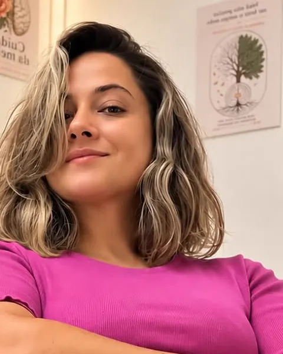

Ansiedade e desafios emocionais
Entender o que você sente, pensa e faz quando a ansiedade aperta, e construir recursos práticos para atravessar os dias difíceis.
- Ansiedade
- Estresse
- Autoconhecimento
Psicoterapia em Prata/MG e online
Sou Fernanda Fernandes, psicóloga. Acompanho pessoas em momentos de ansiedade, luto e crise emocional, com a Terapia Cognitivo-Comportamental e escuta sem julgamento.
Como posso ajudar
Entender o que você sente, pensa e faz quando a ansiedade aperta, e construir recursos práticos para atravessar os dias difíceis.
Luto vai muito além da morte. Acontece sempre que precisamos nos despedir de algo ou alguém que tinha um lugar importante na nossa vida.
Avaliação, acolhimento e manejo clínico de situações de crise, incluindo sofrimento intenso e pensamentos suicidas. Pensamentos suicidas são um sinal de dor, não de fraqueza, e falar sobre eles é o primeiro passo.
A abordagem
A Terapia Cognitivo-Comportamental trabalha essa ligação. Na terapia você aprende a reconhecer seus pensamentos, respeitar seus limites e responder às situações de um jeito que faça sentido para você. Somo a ela práticas contextuais, sempre respeitando a sua história.
“Cuidar da mente não é uma opção para depois. É uma necessidade de agora.”
Fernanda Fernandes, no Instagram
Onde atendo
Você escolhe o formato que cabe na sua rotina. O cuidado e o sigilo são os mesmos nos dois.
Clínica Mediclin, Praça Juscelino Kubitschek, nº 123, Centro, Prata/MG.
Por videochamada. Basta um lugar reservado e uma conexão estável.
Como começar
Pelo WhatsApp ou pelo telefone da clínica, do jeito que conseguir. Pode ser só um oi.
Presencial na Clínica Mediclin ou online por videochamada.
Você conta o que te trouxe, sem pressa e sem resposta certa. A partir dela definimos os próximos passos.
Uma pausa antes de seguir
Três respirações guiadas: inspire em 4 tempos, segure em 2, solte em 6. Soltar o ar mais devagar do que puxou avisa o corpo de que ele pode baixar a guarda.
Respire comigo
Sobre mim
Sou Fernanda Fernandes Nascimento, psicóloga registrada no CRP 04/87624. Trabalho com a Terapia Cognitivo-Comportamental e práticas contextuais, com foco em ansiedade, luto e manejo de crises suicidas.
Acredito que falar exige coragem, e que terapia não é só para quem está no limite: é para quem quer se conhecer e viver com mais leveza. No consultório não existe roteiro pronto. O ritmo é o seu.
Pense comigo
Não é o tempo que cura. É o que você faz com ele.Ver no Instagram Ansiedade
Vamos falar da ansiedade?Assistir Terapia
Terapia não é coisa de “doido”. Os benefícios de cuidar da mente.Assistir Crises
Quando os pensamentos suicidas aparecem, também precisamos falar sobre isso.Ver no Instagram TCC
Se conhecer é o começo. Como funciona a Terapia Cognitivo-Comportamental.Assistir Coragem
Falar exige coragem. E falar é libertador.Ver no Instagram
Dúvidas comuns
Sim. As sessões online acontecem por videochamada, com o mesmo cuidado e sigilo do atendimento presencial. Basta ter um lugar reservado e conexão estável.
Na Clínica Mediclin, Praça Juscelino Kubitschek, nº 123, Centro, Prata/MG. Abrir no mapa.
É uma conversa para você contar o que te trouxe. Não precisa preparar nada nem saber explicar direito. A partir dela a gente entende o que você precisa e combina como seguir.
Valores, horários disponíveis e formas de pagamento são passados pelo WhatsApp ou pelo telefone da clínica. Perguntar não gera compromisso.
Sim. O sigilo é um dever ético da psicologia, previsto no Código de Ética Profissional do Psicólogo.
Contato
Quando você quiser, estou aqui para ouvir.
Atendimento presencial em Prata/MG e online. Horários combinados pelo WhatsApp.Este site não é um canal de emergência. Em risco, ligue 188 (CVV) ou 192 (SAMU).